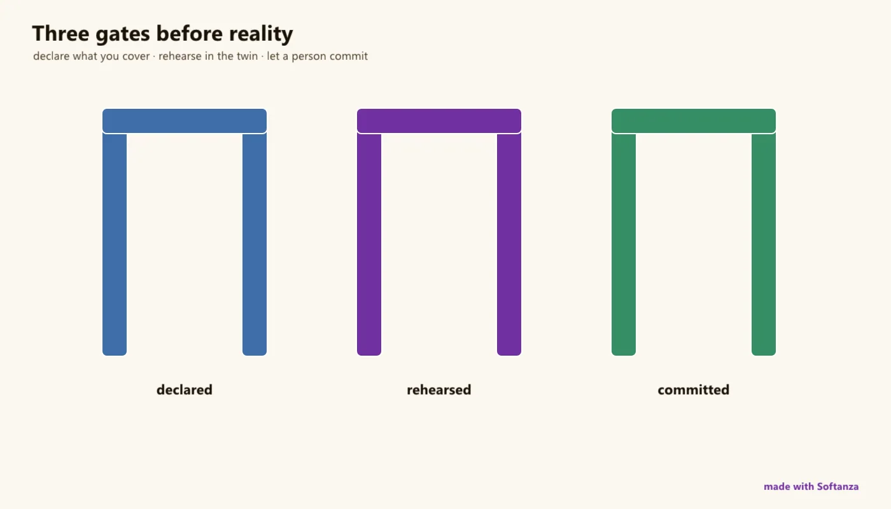

Governance doctrine
The signature: an LLM cannot act effectfully by construction; rehearse then commit, one eleven-domain rule gate, production refuses fakes.
5 Strong · 5 Solid · 2 Partial · 0 Emerging
Measured against: OPA · Deno · Vault · Folders: base/agentic(opens in a new tab) · base/system(opens in a new tab) · base/security(opens in a new tab) · base/service(opens in a new tab) · base/graph(opens in a new tab) · The guide to this area's functions

Rethought from first principles
What Softanza kept from what works, and what it rethought, as the library wrote it down in its design documents and narrations.
The Softanza wayDo not try to build safe agents; build a safe world and let ordinary agents work inside it.
Kept from the best practice
- Separated powers: whoever imagines a change is not whoever may carry it out. Proposers produce plans; committing actors execute them within a declared scope, with an audit trail. source(opens in a new tab)
- Fail closed: an action with no declared risk level never proceeds. The usual failure, an agent doing what nobody thought to forbid, cannot happen. source(opens in a new tab)
- Every decision keeps its lineage: who decided what, when, and under which authority and risk. The record survives a save and can be searched by actor, action or time. source(opens in a new tab)
Rethought
- An agent works on a virtual workbench: it believes it wrote the file, yet the disk did not move. Only a plan crosses, committed by another actor. source(opens in a new tab)
- An agent is a file judged when it loads, the only moment the answer is free. If it does not state its reach and reversibility, it is refused. source(opens in a new tab)
- Permission is not authority. An agent may hold the right to an action and still be refused, because its standing does not cover the action's risk. source(opens in a new tab)
- Risk and reversibility are separate axes. The harder an act is to undo, the more trusted the code performing it must be; model-written code may only do reversible work. source(opens in a new tab)
Softanza's signature, the one capability where it out-covers .NET, Python, Wolfram and the JVM alike: safety is architectural, not procedural. An LLM (or any untrusted capability) cannot act effectfully by construction -- it holds only the inference capability, granting it effectful raises at construction, and effectful work rehearses in a semantic virtual world whose only export is a reviewable update plan a governed actor commits; one rule gate then judges the result across eleven domains. 'We will not build safe agents. We will build a safe world, and let ordinary agents loose inside it.'
What a maker does with it, and what stands out
- Safety is architectural, not procedural: an LLM cannot act effectfully because it never holds the capability
- A semantic sandbox whose only export is a reviewable, rejectable update plan, not an opaque container
- One rule gate judging code, agents, services, security and diagram models across 11 domains
- Production refuses fakes by construction: sandbox-in-production raises, and the sandboxes are genuine
What is owed
- A formal capability type that cannot be forged around Grant
- Flip the engine-loop registration gate (MayRegister) to default
- Close the host-function escape with a behavioural check, and wire the native agent roster
- The negotiation loop (Receive/Revise), the evaluation hall and branches, and stzHybridAgent
The Softanza way, run
What Softanza does differently in this area, shown by code taken from its narrations and guards, and run for this page.
An agent that does not say what it covers, or how reversible its work is, cannot be registered, and each refusal names its rule.
oGov = new stzGovernance("shop")
? "no coverage stated -> " + oGov.MayRegister("mystery", "", "reversible")
? " " + oGov.Why()
? "no reversal declared -> " + oGov.MayRegister("mystery", "reorders stock", "")
? " " + oGov.Why()
? "both stated -> " + oGov.MayRegister("mystery", "reorders stock", :Compensable)no coverage stated -> 0 AGENTLOOP-R4: agent 'mystery' declares no coverage statement. Registration refuses it. Say what this agent covers, in one sentence, before the loop will run it. Law 18: nothing schedules what nobody has stated the reach of. no reversal declared -> 0 AGENTLOOP-R5: agent 'mystery' declares no reversibility class. Registration refuses it. Declare one of: reversible | compensable | irreversible. Law 18: an agent whose reversal nobody stated cannot be scheduled by something that cannot undo it. both stated -> 1
run on 2026-10-01 21:18 inside the library at commit 0e72e2e2c; taken from base/doc/narrations/stz-agents-that-cannot-hurt-you-narration.md(opens in a new tab)
An agent holds the permission yet is refused, because its delegated authority does not cover a risk-3 action; the answer explains why.
oG2 = new stzGovernance("billing")
oG2.DeclareRisk("send-invoice", 3)
oG2.GrantPermission("billing-agent", "send-invoice")
oG2.SetAuthority("billing-agent", :Delegated)
? "may it proceed? " + oG2.MayProceed("billing-agent", "send-invoice")
? " " + oG2.Why()may it proceed? 0 refused: 'billing-agent' holds 'delegated' authority (level 2) but 'send-invoice' is risk tier 3 (SHOULD does not cover it)
run on 2026-10-01 21:18 inside the library at commit 0e72e2e2c; taken from base/doc/narrations/stz-agents-that-cannot-hurt-you-narration.md(opens in a new tab)
The lanes, one by one
Lanes and their notes are quoted as they were read at the source, on Read from the source on 2026-09-17, from a read-only main worktree -- base/agentic/stzAgentGraph + stzAgentWorkbench / stzPIAgent / stzAgentDeclaration; base/system/stzVirtualSystem / stzVirtualFileSystem / stzSystemActor; base/graph/stzRuleReport + stzPredicateSet; base/security/stzSecretStore / stzSecurityLedger; base/service/stzServiceRegistry / stzServiceRule; doctrine in base/doc/design/SOFTANZA_INTELLIGENCE_ARCHITECTURE.md; guards safeworld (76), governance_crossing, service_registry, security_ledger, the agentic suite (261 asserts).